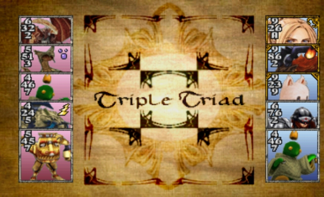
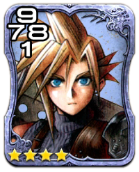
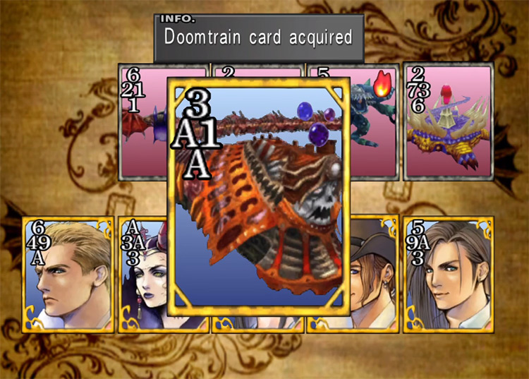
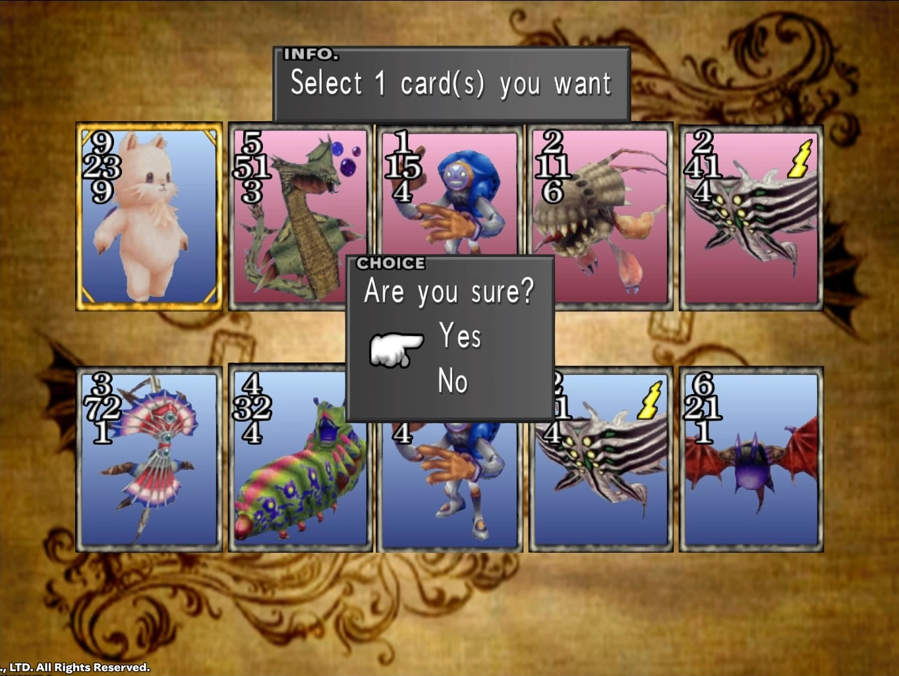

So How does it work then?
- Triple Triad is played on a 3 x 3 board of blank spaces where the cards will be placed.
- The numbers on the cards represent the strength/defense value of their corresponding sides. -- 'A' represents a value of 10. Some cards also have an elemental symbol in the top right hand corner, representing the cards element (Earth, Fire, Water, Poison, Holy, Lightning, Wind, or Ice) which can raise/lower a cards value depending on the element of the sqaure on which they are placed and/or any adjacent cards
- In a basic game, each player has five cards, which they take turns placing on the grid.
- If the player places their card beside of from the opponent the values of any adjoining sides will be compared and any weaker cards will be captured and added/subtracted to/from each players points
- Once the grid has been filled, the player with the most cards of in their color will be declared the winner!!
- To get a better idea click on the link and skip to around the 30 second
(skip to around the 30sec mark for the good stuff)



